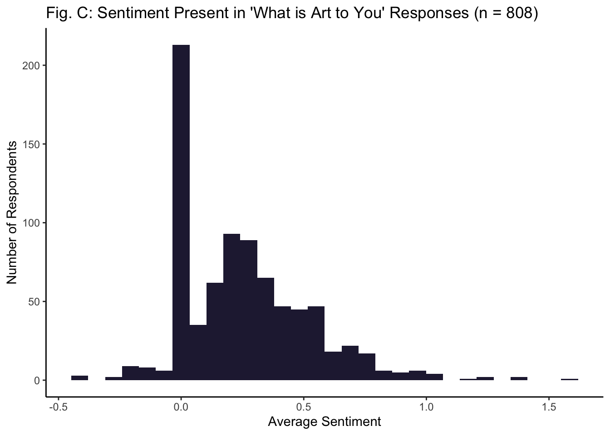
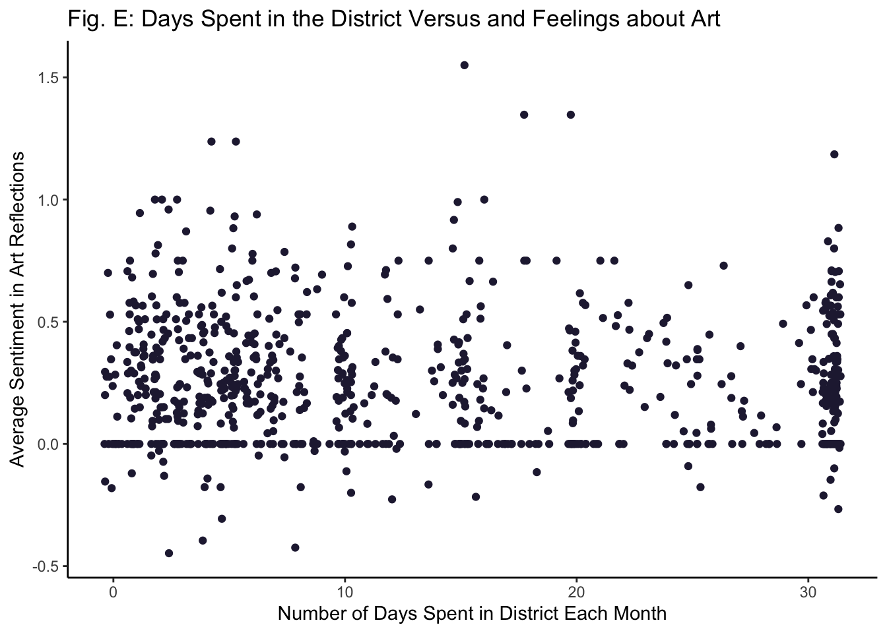

A Brief Exploration of the Roosevelt Row Arts District
Keragan Cavolo
5/29/2021

Roosevelt Row Arts District - Photo Taken by Danny Upshaw
Project Background
I served as a consulting data analyst on a project exploring the Roosevelt Row Arts District (rrad) in Phoenix, Arizona. The goal of this project was to survey community members (e.g., residents, artists, business owners, employees, and visitors of the district) to get an understanding of how they interact with and feel about art and the district. The ultimate goal was to leverage data to drive future decisions regarding funding district wide programs and elevating the artist experience. For more on the district see https://www.rooseveltrow.org.
This Document and The Dataset
For the purpose of this project, I will be using a subset of the rrad dataset. I have already cleaned this dataset (e.g., removed duplicates and individuals with missing data in what were deemed as necessary sections of the survey). Myself and two consultants designed the survey in March 2021. The data were collected via Survey Monkey in April 2021. The total sample size was N = 1081. As the dataset does not belong to me, it will not be publicly available, but I have received permission to use it for this project.
Variables of interest
We asked a variety of questions, including demographics, feelings about art, how they interact with the district, what their role in the district is (e.g., artist, resident, employee, business owner, visitor, or some combination of the above), and user-specific questions (e.g., for residents, how they feel about living in the district, how artists feel about creating art in the district, etc.). For this project, I will be including the following variables:
- Number of days spent in the district each month (Integer)
- What is art to you? (Character)
Questions of Interest
I am curious about the relationship between the number of days people spend in the district and their positive/negative feelings about art.
- Do people who spend more time in the arts district have more positive sentiment present in their written reflections about art? (rationale: It could be reasoned that people who spend more time in an arts district do so because they have more positive feelings about art.)
Note: We cannot infer causality - The goal is to simply explore the relationship between these variables.
Overview of Analyses
To explore this question, I conduct the following analyses:
- Explore distributions of variables
- Sentiment Analysis of written reflections (What is art to you?)
- Correlation between art sentiment and days spent in district
Load Packages
library(dplyr)
library(ggplot2)
library(tm)
library(wordcloud2)
library(sentimentr)
library(tidytext)
library(tidyr)Prepare the Data
First, I read in the whole dataset:
rrad_data <- read.csv('/Users/keragancavolo/Documents/RRAD Survey/Data/rrad_data_cleaned_v02.csv')Next, I select the columns corresponding to my variables of interest from the main dataset:
rrad_data <- rrad_data %>%
select(respondent_id, role_in_district, days_spent_here_month, art_to_you)Glimpse at the resulting dataframe:
glimpse(rrad_data)## Rows: 1,081
## Columns: 4
## $ respondent_id <dbl> 12620726364, 12621033464, 12599672650, 126198783…
## $ role_in_district <chr> "I create and/or sell art here", "I create and/o…
## $ days_spent_here_month <int> 2, 22, 3, 0, 7, 18, 10, 8, 14, 22, 16, 0, 10, 5,…
## $ art_to_you <chr> "art is community creativity, livens the senses …Fix Data Types
Role_in_district will need to be changed to factor:
rrad_data$role_in_district <- as.factor(rrad_data$role_in_district)Respondent_id will need to be changed to character data type:
rrad_data$respondent_id <- as.character(rrad_data$respondent_id)Check that data types were successfully changed:
glimpse(rrad_data) ## Rows: 1,081
## Columns: 4
## $ respondent_id <chr> "12620726364", "12621033464", "12599672650", "12…
## $ role_in_district <fct> I create and/or sell art here, I create and/or s…
## $ days_spent_here_month <int> 2, 22, 3, 0, 7, 18, 10, 8, 14, 22, 16, 0, 10, 5,…
## $ art_to_you <chr> "art is community creativity, livens the senses …Visualize the Data
Days Spent in the District Each Month
ggplot(rrad_data, aes(x=days_spent_here_month)) +
geom_histogram(fill="#26213F") +
theme_classic() +
xlab("Days Spent in the District") +
ylab("Number of Respondents") +
ggtitle("Fig. A: Days Spent in the District Each Month (N = 1081)")Note: may need to transform due to non-normal distribution
Fig. B: What is Art to You? (n = 808)
Sentiment Analysis
Obtain average sentiment score for each individuals’ reflection of what art is to them:
rrad_data <- rrad_data %>%
mutate(sentiment_by(rrad_data$art_to_you))Remove respondents who did not answer the ‘What is Art to You’ question, so they will not be assigned as 0 sentiment:
rrad_data <- rrad_data %>%
filter(!is.na(art_to_you))Visualize sentiment scores:
ggplot(rrad_data, aes(x=ave_sentiment)) +
geom_histogram(fill = '#26213F') +
theme_classic() +
xlab("Average Sentiment") +
ylab("Number of Respondents") +
ggtitle("Fig. C: Sentiment Present in 'What is Art to You' Responses (n = 808)")
Highly skewed - Many responses contained zero sentiment, with remaining appearing to be mostly positive. Note: 0 = no sentiment, >0 = positive sentiment, <0 = negative sentiment.
Explore summary statistics for average sentiment variable:
summary(rrad_data$ave_sentiment)## Min. 1st Qu. Median Mean 3rd Qu. Max.
## -0.4472 0.0000 0.2196 0.2542 0.4094 1.5500Large max suggests presence of outlier(s).
Explore the breakdown of positive, negative, and 0 sentiment in responses by creating a new column that categorizes the average sentiment scores into negative, none, and positive:
rrad_data <- rrad_data %>%
mutate(sentiment_category = case_when(ave_sentiment == 0.00000000 ~ 'none', #If sentiment == 0, categorize as none
ave_sentiment > 0 ~ 'positive', #If sentiment is > 0, categorize as positive
ave_sentiment < 0 ~ 'negative')) #If sentiment is < 0, categorize as negativeGet number of number of responses for each sentiment category:
rrad_data %>%
count(sentiment_category)## sentiment_category n
## 1 negative 33
## 2 none 206
## 3 positive 569Mostly positive sentiment (70%).
Correlation Analysis
Check Assumptions
Removed 273 respondents because they didn’t complete the ‘What is Art to You’ question, so need to look at graph of Days Spent in the District with the condensed sample size:
ggplot(rrad_data, aes(x=days_spent_here_month)) +
geom_histogram(fill="#26213F") +
theme_classic() +
xlab("Days Spent in the District") +
ylab("Number of Respondents") +
ggtitle("Fig. D: Days Spent in the District Each Month (n = 808)")Not noticeably different from whole sample.
Visualize relationship between days spent in the district and sentiment in ‘What is Art to You’ responses:
ggplot(rrad_data, aes(days_spent_here_month, ave_sentiment)) +
geom_point(color = '#26213F') +
theme_classic() +
xlab("Number of Days Spent in District Each Month") +
ylab("Average Sentiment in Art Reflections") +
ggtitle("Fig. E: Days Spent in the District Versus and Feelings about Art")
Based on this graph, there does not appear to be a relationship between days spent in the district and average sentiment in individuals’ reflections of what art is to them.
Spearman Rho Correlation
The figures above demonstrate non-linearity, a high level of skewness in both variables, and potential outliers in the average sentiment variable. As such, I will use the Spearman rho correlation as it is robust against outliers and high skew. However, based on Figure D., I am not expecting a significant correlation.
Run the Spearman Rho Correlation Test
cor.test(rrad_data$days_spent_here_month, rrad_data$ave_sentiment, method = 'spearman', exact = FALSE)##
## Spearman's rank correlation rho
##
## data: rrad_data$days_spent_here_month and rrad_data$ave_sentiment
## S = 91502089, p-value = 0.2472
## alternative hypothesis: true rho is not equal to 0
## sample estimates:
## rho
## -0.0407558It appears that the number of days spent in the district and sentiment from respondents’ art reflections are not related (rho = -0.04).
Limitations
- The vast majority of responses to the ‘What is Art to You’ question contained 0 sentiment. The nature of this question could be one reason why there was no evidence of a relationship between the number of days spent in the district and sentiment. Specifically, we did not ask respondents how they feel about art, but rather what it means to them. Perhaps if worded differently, there might have been a greater presence of sentiment.
Resources
Here are links to resources I used for creating this RMarkdown:
Pimp my RMD: a few tips for R Markdown
Creating Pretty Documents From R Markdown
Session Info
## R version 4.0.3 (2020-10-10)
## Platform: x86_64-apple-darwin17.0 (64-bit)
## Running under: macOS Catalina 10.15.7
##
## Matrix products: default
## BLAS: /Library/Frameworks/R.framework/Versions/4.0/Resources/lib/libRblas.dylib
## LAPACK: /Library/Frameworks/R.framework/Versions/4.0/Resources/lib/libRlapack.dylib
##
## locale:
## [1] en_US.UTF-8/en_US.UTF-8/en_US.UTF-8/C/en_US.UTF-8/en_US.UTF-8
##
## attached base packages:
## [1] stats graphics grDevices utils datasets methods base
##
## other attached packages:
## [1] tidyr_1.1.3 tidytext_0.3.1 sentimentr_2.7.1 wordcloud2_0.2.1
## [5] tm_0.7-8 NLP_0.2-1 ggplot2_3.3.3 dplyr_1.0.5
##
## loaded via a namespace (and not attached):
## [1] textshape_1.7.1 tidyselect_1.1.0 xfun_0.23 slam_0.1-48
## [5] purrr_0.3.4 lattice_0.20-41 colorspace_2.0-0 vctrs_0.3.6
## [9] generics_0.1.0 htmltools_0.5.1.1 SnowballC_0.7.0 yaml_2.2.1
## [13] utf8_1.1.4 rlang_0.4.10 syuzhet_1.0.6 pillar_1.6.0
## [17] textclean_0.9.3 glue_1.4.2 withr_2.4.1 DBI_1.1.1
## [21] lexicon_1.2.1 lifecycle_1.0.0 stringr_1.4.0 munsell_0.5.0
## [25] gtable_0.3.0 htmlwidgets_1.5.3 evaluate_0.14 labeling_0.4.2
## [29] qdapRegex_0.7.2 knitr_1.33 parallel_4.0.3 fansi_0.4.2
## [33] highr_0.8 tokenizers_0.2.1 Rcpp_1.0.6 scales_1.1.1
## [37] jsonlite_1.7.2 farver_2.0.3 digest_0.6.27 stringi_1.5.3
## [41] grid_4.0.3 cli_2.4.0 tools_4.0.3 magrittr_2.0.1
## [45] tibble_3.1.0 janeaustenr_0.1.5 crayon_1.4.1 pkgconfig_2.0.3
## [49] ellipsis_0.3.1 Matrix_1.2-18 data.table_1.13.6 xml2_1.3.2
## [53] rstudioapi_0.13 assertthat_0.2.1 rmarkdown_2.6 R6_2.5.0
## [57] compiler_4.0.3